进入采购区，找到您经常合作的线路区域，点击“预订” 填写游客名单及特殊要求等信息，提交即可

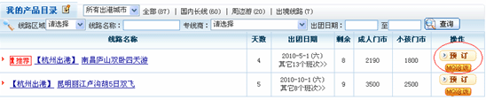
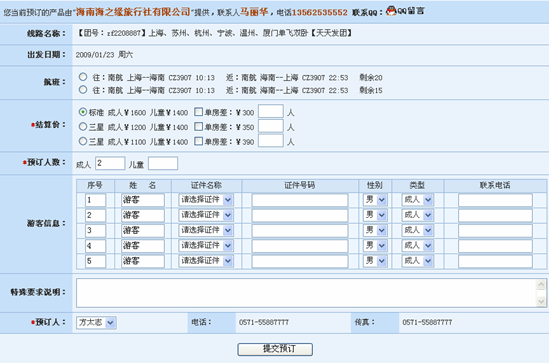
在同业114网站登录后到散拼中心找到相应的线路产品，点击预订，填写相关游客信息，提交订单即可

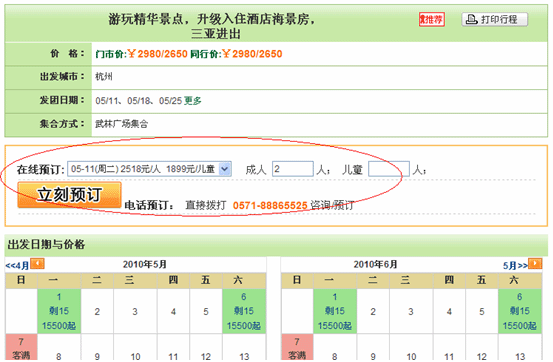
| 帮助中心首页 > 关键问题 |
| 我的账户很久没有登录了，MQ会不会取消账户？ |
|
不会，同业114会员审核通过后，账户永不删档，不存在几个月未登录即注销账户的规定。建议用户下载同业MQ，您发布了产品信息后，电脑挂着他，这样同行来询价的时候就可以直接回复。 由于同业114平台是企业用户平台。 以下范围内会取消会员资格一是透露平台账号至直客，导致平台企业用户机密外泄的，二恶意注册（假借他人公司名义注册的，同行网站注册的，直客注册的等） |
| 什么是出港城市？ |
| 出港城市是指：交通工具的出发地，一般指飞机轮船等交通工具的出发地，即“上海“的有机场，那么上海是一个出港城市。选择出港城市的意义，设置好出港城市后该团队就是从出港城市出发， 乘坐飞机轮船开始您的旅行！ |
| 我是组团社，我有游客在报名，如何提交订单给专线？ |
|
第一种方法： 进入采购区，找到您经常合作的线路区域，点击“预订” 填写游客名单及特殊要求等信息，提交即可 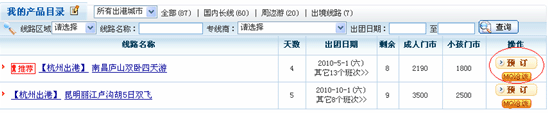 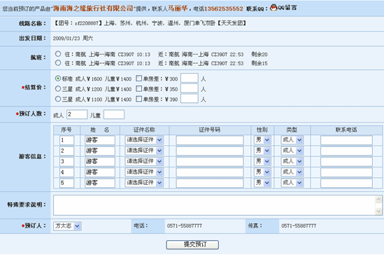 |
|
第二种方法： 在同业114网站登录后到散拼中心找到相应的线路产品，点击预订，填写相关游客信息，提交订单即可 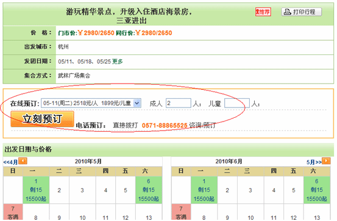 |
| 节假日期间旅游资源很紧俏，游客尚不能确定出游时间，这个单子怎么办？如何处理？ |
|
您可以等这个客人确定时间后再提交订单或者您在提交订单的过程中，在特殊要求说明中写入该订单的实际情况，让专线为您预留位置，专线接到订单后，设置您的订单为
“留位订单”留位会有一个有效时间，在有效时间段内如果您还没有落实该订单，其订单自动取消。 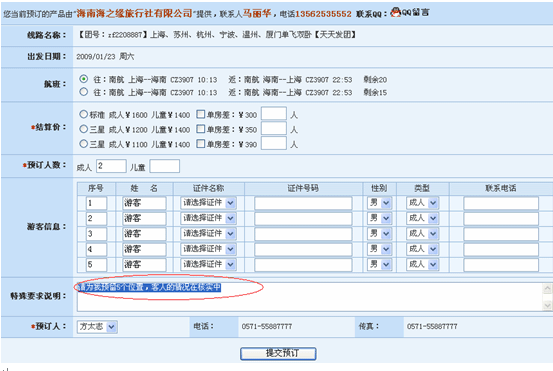 |
| 我是专线，我的业务线上线下都很火，如何即时更改剩余人数以免出现超额现象？ |
|
在一般情况下，用户均通过线上线下收客，这样我们的剩余人数就会出现不一致的情况，同业114有一个很简单的方法设置， 即在“未出发团队”操作明细表中直接修改剩余人数： 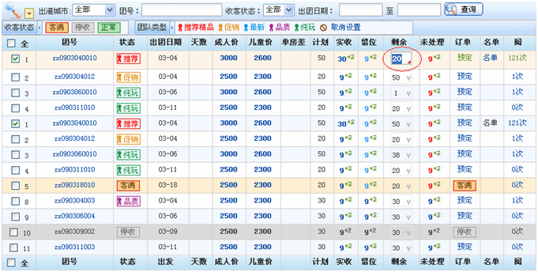 |
| 如何打印行程单？ |
|
您在浏览同业114平台时，线路信息的详细页都能够打印行程单。
打印控件安装是指：自动设置 A4 纸张、打印时出现表格、自动设置页眉和页角为空,不出现网址。 并且提供字体变大变小，行间距距离问题，而且设置好后可以预览打印 左侧的高度提示您，您的打印页码是否已经能够刚好打印一张纸 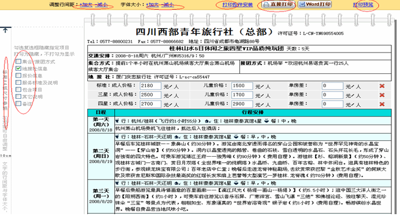 |
| 如何打印出团通知书? |
|
订单提交后用户即可打印出团通知书
进入我的订单，在最近交易的订单中，找到您的订单，在订单的操作中，有“打印出团通知书”功能 订单打印界面功能类似行程单打印 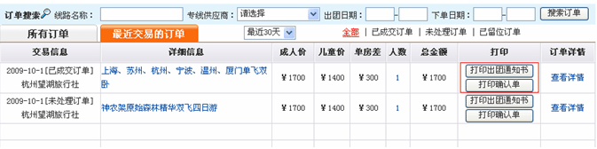 |
| 如何打印确认单? |
|
订单提交后用户即可打印确认单
进入我的订单，在最近交易的订单中，找到您的订单，在订单的操作中，有“打印确认单”功能 订单打印界面功能类似行程单打印 |
| 如何打印客人名单? |
|
专线商打印客人名单：
方法一、 进入未出发团队 → 线路明细操作表 → 名单打印 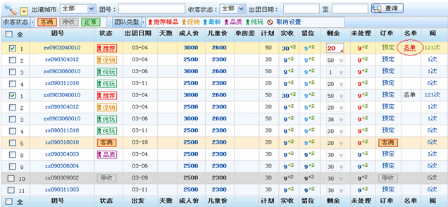 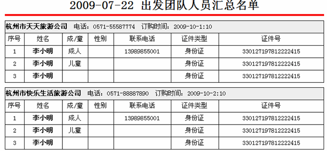 |
|
方法二、 进入订单中心已成交客户 → 预订成功次数 → 预订人数 → 打印界面 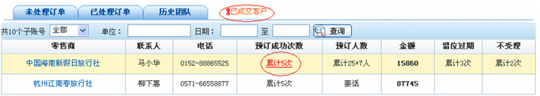   |